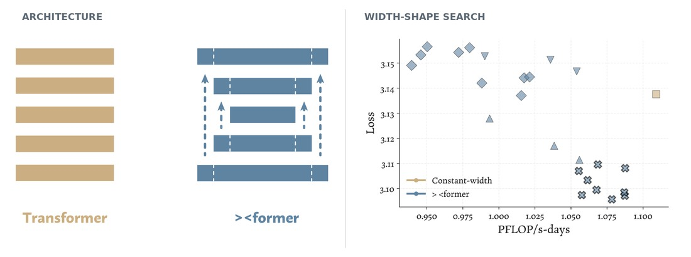

Redistribute a fixed decoder's capacity across its layers to reduce late-training loss without changing the model's overall parameter or compute budget.

The task
Test where decoder capacity is most useful across depth. A candidate redistributes width while staying inside the same overall model and training budgets, and aims to lower loss.
Environment
- The starting point is the official variable-width decoder design.
- The agent delivers one architecture manifest; optional research notes are not scored.
Reference baseline
The official variable-width allocation is the reference design. Its loss is reported by the source paper rather than rerun beside each candidate; every candidate receives its own fresh training run.
Research loop
- Inspect the current allocation and the aggregate feedback from earlier submissions.
- Change one aspect of how capacity is distributed and validate the architecture.
- Train and score the candidate, then keep, revise, or reject the allocation hypothesis.
What the agent may change
- How decoder width is distributed from early to late layers.
- Whether the residual stream keeps a fixed width.
- How input and output boundary widths are handled.
- How representations expand when width changes between layers.
What stays fixed
- Decoder depth, attention and MLP structure, tokenizer, and training data.
- The parameter and compute ceilings.
- Initialization, optimizer, schedule, update count, and precision.
- The training-based Judge and its loss aggregation.
Evaluation
The Judge reconstructs the submitted architecture and trains it with the fixed trajectory. The reward is negative late-training loss, so a higher score means a lower loss. Only aggregate loss and budget accounting are returned.
Links
- Task package (instruction, policy, tests) ↗
- Run logs are not currently published.
- Source project ↗
- Paper ↗